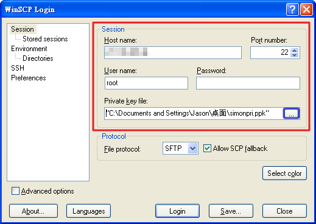
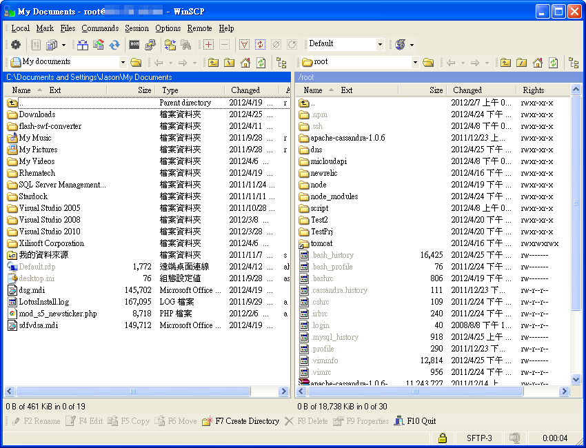
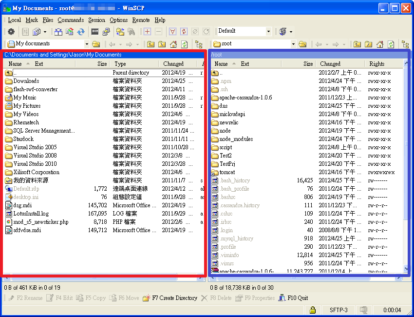

Back to Wiki
Back to Wiki
檔案上傳教學(WinScp)
影片:MiCloud 使用 WinScp 配合 SSH-Key(.ppk) 上傳與下載檔案
使用 WinScp 配合 SSH-Key(.ppk) 上傳與下載檔案
WinScp 使用 SSH-key(.ppk) 與 MiCloud 機器連線
輸入 Session 內之欄位(紅色框框)
Host name : 輸入您的主機IP
Port number : 22 (22為MiCloud的預設SSH連接阜)
User name : root (root為MiCloud的預設帳號)
Password : 空白即可
Private key file : 點選右方藍色框框,選擇您的 Private Key(.ppk)

輸入完成後點選Login

WinScp 上傳與下載檔案
成功登入後,左邊紅色框框為你本機的資料夾,右邊藍色框框為你連線過去的電腦資料夾.
如果要上傳A檔案,只需要從左邊紅色框框內找出那份檔案後,將其拖曳去右邊的資料夾即可.
同理,如果要下載A檔案至你本機電腦,只需在右邊藍色框框內找出您的檔案後,拖曳至左邊紅色框框內即可.
